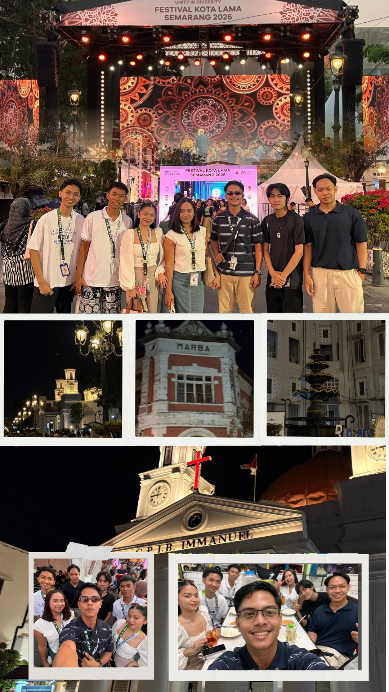
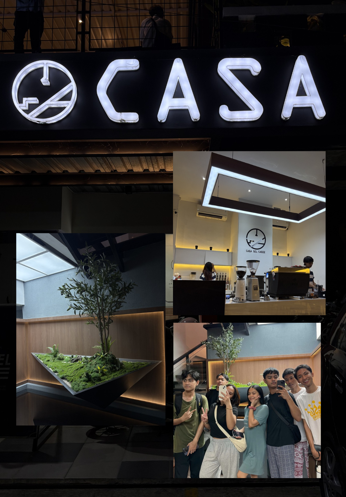
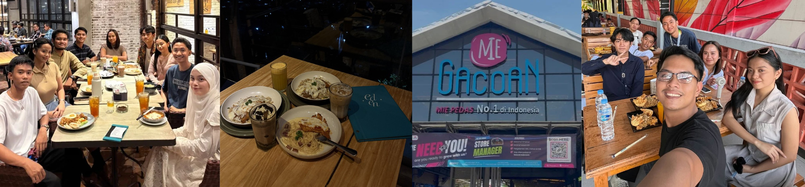
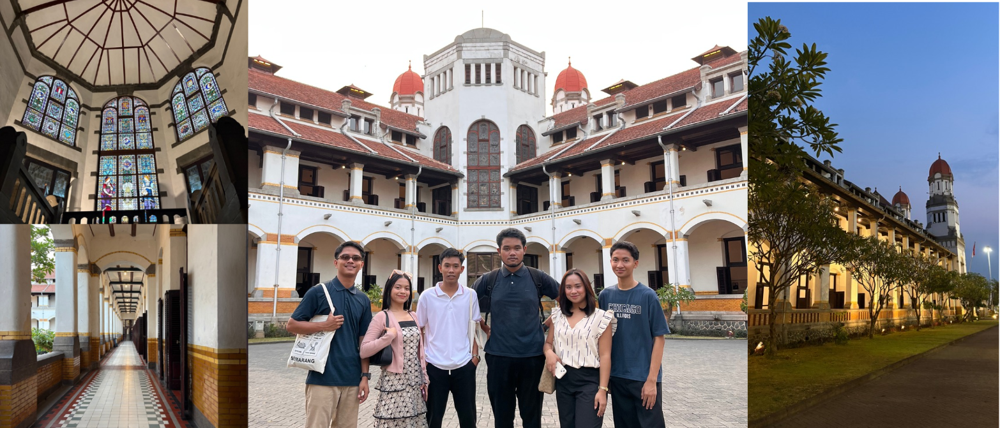
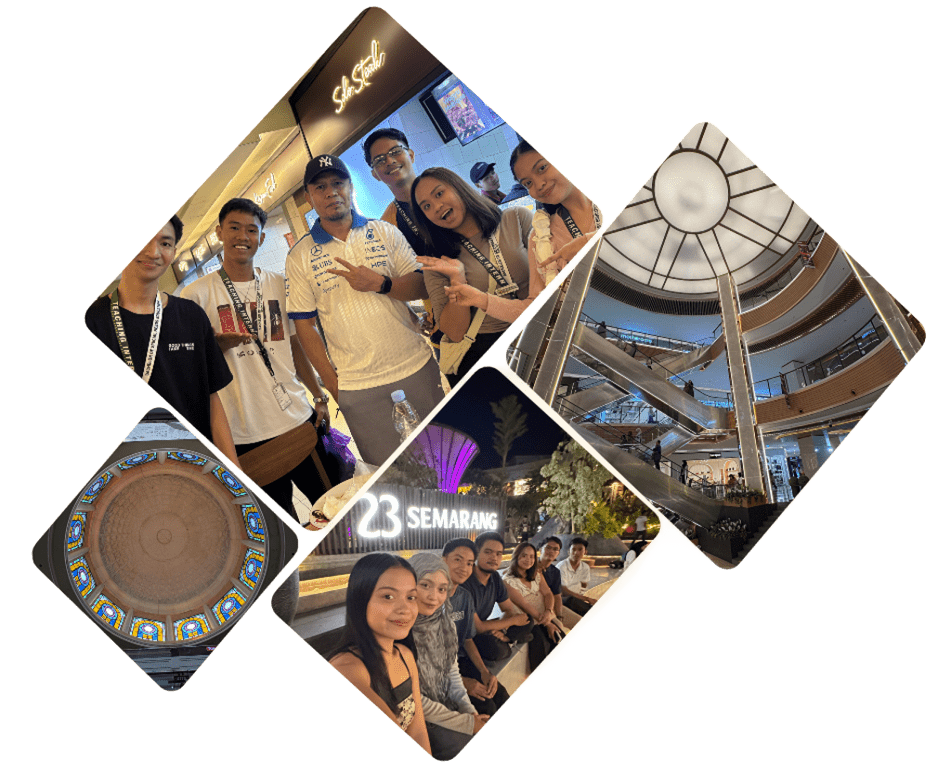

Kota Lama
During the first week of our stay in Indonesia, our student buddies invited us to visit Kota Lama, one of the most iconic heritage districts in Semarang. Fortunately, our visit coincided with their Diversity Festival, making the experience even more memorable.
As we walked through the streets, we admired the well-preserved Dutch colonial buildings, vibrant festival lights, and historical landmarks that showcased Semarang's rich past. We visited several notable structures, including Marba Building and Immanuel Church, while learning more about their historical significance.
The night became more enjoyable as we explored the food park with our Indonesian friends. We tried local dishes, including sate ayam, while sharing stories and creating memories together. Kota Lama was not only a place filled with history and culture but also a place where friendships grew stronger.
Casa Del Caffe
Located just across YSKI, Casa Del Caffe quickly became one of our favorite places in Semarang. Whenever classes ended, this café became our go-to place to rest, work on lesson preparations, and spend time with fellow SEA-Teacher participants.
Beyond its cozy atmosphere, Casa offered affordable and delicious food and beverages, making it a perfect spot for students. Many of our conversations, lesson planning sessions, and shared laughter happened here, turning this café into a meaningful part of our stay in Indonesia.

Eden Restaurant
One of the most unforgettable dining experiences I had in Semarang was visiting Eden. Situated on a higher elevation, the restaurant offers a breathtaking panoramic view of the city lights at night.
While the view alone was already impressive, the food made the experience even better. The meals were delicious, well-prepared, and surprisingly affordable. More importantly, this visit gave me an opportunity to spend time with other student teachers and meet new friends. Sharing stories while overlooking the city created memories that I will always cherish.
Mie Gacoan
Recommended by our student buddies, Mie Gacoan became one of the restaurants we were most excited to try. Known for its famous spicy noodles and recognized as one of Indonesia's most popular noodle chains, it quickly became one of our favorite places to eat.
The restaurant offers a wide variety of noodle dishes and side dishes at affordable prices. Despite the long queues, the food was worth the wait. Trying Mie Gacoan gave us another chance to experience Indonesian food culture and understand why it is loved by many locals.

Lawang Sewu

One of our Indonesian friends accompanied us to Lawang Sewu, one of Semarang's most famous landmarks. The name Lawang Sewu translates to "A Thousand Doors," referring to the building's many doors and windows that create the illusion of countless entrances.
As we explored the different rooms, hallways, and courtyards, I was amazed by the building's design and rich history. Visiting Lawang Sewu allowed me to appreciate not only Indonesia's architectural heritage but also the stories and events that shaped the country's past.
Semarang Malls
As the capital city of Central Java, Semarang is home to several modern shopping centres that became part of our daily life during our stay in Indonesia. From CL Mall, DP Mall, Queen City Mall, Java Supermall, to 23 Semarang, these places offered more than just shopping and dining. They became spaces where we explored the city, tried local food, spent time with friends, and gradually adapted to a new environment and culture.
One of our most unforgettable experiences happened during our visit to CL Mall. While deciding what to eat, we struggled because of the language barrier. As we spoke in Filipino among ourselves, someone nearby recognized our language and approached us. To our surprise, he was also a Filipino. He helped us order our food in Bahasa Indonesia and shared a short conversation with us. What started as a simple trip to the mall became a meaningful encounter that reminded us that even far from home, familiar connections can be found in the most unexpected places.
